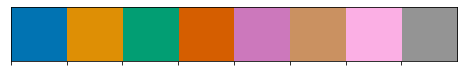

Transient CO2¶
%load_ext autoreload
%autoreload 2
from itertools import product
import pandas as pd
import numpy as np
import xarray as xr
import matplotlib.pyplot as plt
import matplotlib.gridspec as gridspec
import matplotlib.colors as colors
import cmocean
import cartopy
import cartopy.crs as ccrs
os.environ['CESMDATAROOT'] = '/glade/scratch/mclong/inputdata'
import pop_tools
import utils
import data_collections
import plot
from ncar_jobqueue import NCARCluster
cluster = NCARCluster(memory='10 GB')
cluster.scale(10) #adapt(minimum_jobs=0, maximum_jobs=24)
client
/glade/u/home/mgrover/miniconda3/envs/cesm2-marbl/lib/python3.7/site-packages/distributed/node.py:164: UserWarning: Port 8787 is already in use.
Perhaps you already have a cluster running?
Hosting the HTTP server on port 40653 instead
expected, actual
Client
|
Cluster
|
experiments = [
'historical',
'SSP1-2.6',
'SSP2-4.5',
'SSP3-7.0',
'SSP5-8.5',
]
query = dict(
experiment=experiments,
stream='pop.h',
)
glb_int = data_collections.global_integral_timeseries_ann(query)
glb_avg = data_collections.global_mean_timeseries_ann(query)
glb_int
{ 'esm_collection': 'data/campaign-cesm2-cmip6-timeseries.json',
'name': 'global_mean_timeseries_ann',
'operator_kwargs': [ { },
{ 'include_ms': False,
'normalize': False},
{ }],
'operators': [ 'center_time',
'global_mean',
'resample_ann'],
'preprocess': None,
'query': { 'experiment': [ 'historical',
'SSP1-2.6',
'SSP2-4.5',
'SSP3-7.0',
'SSP5-8.5'],
'stream': 'pop.h'}}
dsets_int = glb_int.to_dataset_dict('FG_CO2', clobber=False)
dsets_avg = glb_avg.to_dataset_dict(['ATM_CO2', 'SST',], prefer_derived=True, clobber=False)
assert dsets_int.keys() == dsets_avg.keys()
dsets = {}
for key in dsets_int.keys():
dsets[key] = xr.merge((dsets_int[key], dsets_avg[key]))
dsets
{'ocn.historical.pop.h': <xarray.Dataset>
Dimensions: (lat_aux_grid: 395, member_id: 11, moc_comp: 3, moc_z: 61, nlat: 384, nlon: 320, time: 165, transport_comp: 5, transport_reg: 2, z_t: 60, z_t_150m: 15, z_w: 60, z_w_bot: 60, z_w_top: 60)
Coordinates: (12/13)
* z_t_150m (z_t_150m) float32 500.0 1.5e+03 ... 1.45e+04
TLONG (nlat, nlon) float64 320.6 321.7 ... 319.4 319.8
TLAT (nlat, nlon) float64 -79.22 -79.22 ... 72.19 72.19
* member_id (member_id) int64 1 2 3 4 5 6 7 8 9 10 11
* z_t (z_t) float32 500.0 1.5e+03 ... 5.125e+05 5.375e+05
* moc_z (moc_z) float32 0.0 1e+03 2e+03 ... 5.25e+05 5.5e+05
... ...
* z_w (z_w) float32 0.0 1e+03 2e+03 ... 5e+05 5.25e+05
* z_w_bot (z_w_bot) float32 1e+03 2e+03 ... 5.25e+05 5.5e+05
* z_w_top (z_w_top) float32 0.0 1e+03 2e+03 ... 5e+05 5.25e+05
* lat_aux_grid (lat_aux_grid) float32 -79.49 -78.95 ... 89.47 90.0
ULONG (nlat, nlon) float64 321.1 322.3 ... 319.6 320.0
* time (time) int64 1850 1851 1852 1853 ... 2012 2013 2014
Dimensions without coordinates: moc_comp, nlat, nlon, transport_comp, transport_reg
Data variables: (12/56)
TAREA (nlat, nlon) float64 1.125e+13 ... 7.432e+12
sound float64 1.5e+05
ocn_ref_salinity float64 34.7
days_in_norm_year timedelta64[ns] 365 days
sflux_factor float64 0.1
HUS (nlat, nlon) float64 2.397e+06 ... 1.473e+06
... ...
salt_to_Svppt float64 1e-09
rho_sw float64 1.026
nsurface_u float64 8.297e+04
FG_CO2 (time, member_id) float64 ...
ATM_CO2 (time, member_id) float64 ...
SST (time, member_id) float64 ...,
'ocn.SSP5-8.5.pop.h': <xarray.Dataset>
Dimensions: (lat_aux_grid: 395, member_id: 3, moc_comp: 3, moc_z: 61, nlat: 384, nlon: 320, time: 86, transport_comp: 5, transport_reg: 2, z_t: 60, z_t_150m: 15, z_w: 60, z_w_bot: 60, z_w_top: 60)
Coordinates: (12/13)
* z_t_150m (z_t_150m) float32 500.0 1.5e+03 ... 1.45e+04
TLONG (nlat, nlon) float64 320.6 321.7 ... 319.4 319.8
TLAT (nlat, nlon) float64 -79.22 -79.22 ... 72.19 72.19
* member_id (member_id) int64 4 10 11
* z_t (z_t) float32 500.0 1.5e+03 ... 5.125e+05 5.375e+05
* moc_z (moc_z) float32 0.0 1e+03 2e+03 ... 5.25e+05 5.5e+05
... ...
* z_w (z_w) float32 0.0 1e+03 2e+03 ... 5e+05 5.25e+05
* z_w_bot (z_w_bot) float32 1e+03 2e+03 ... 5.25e+05 5.5e+05
* z_w_top (z_w_top) float32 0.0 1e+03 2e+03 ... 5e+05 5.25e+05
* lat_aux_grid (lat_aux_grid) float32 -79.49 -78.95 ... 89.47 90.0
ULONG (nlat, nlon) float64 321.1 322.3 ... 319.6 320.0
* time (time) int64 2015 2016 2017 2018 ... 2098 2099 2100
Dimensions without coordinates: moc_comp, nlat, nlon, transport_comp, transport_reg
Data variables: (12/56)
TAREA (nlat, nlon) float64 1.125e+13 ... 7.432e+12
sound float64 1.5e+05
ocn_ref_salinity float64 34.7
days_in_norm_year timedelta64[ns] 365 days
sflux_factor float64 0.1
HUS (nlat, nlon) float64 2.397e+06 ... 1.473e+06
... ...
salt_to_Svppt float64 1e-09
rho_sw float64 1.026
nsurface_u float64 8.297e+04
FG_CO2 (time, member_id) float64 ...
ATM_CO2 (time, member_id) float64 ...
SST (time, member_id) float64 ...,
'ocn.SSP3-7.0.pop.h': <xarray.Dataset>
Dimensions: (lat_aux_grid: 395, member_id: 3, moc_comp: 3, moc_z: 61, nlat: 384, nlon: 320, time: 86, transport_comp: 5, transport_reg: 2, z_t: 60, z_t_150m: 15, z_w: 60, z_w_bot: 60, z_w_top: 60)
Coordinates: (12/13)
* z_t_150m (z_t_150m) float32 500.0 1.5e+03 ... 1.45e+04
TLONG (nlat, nlon) float64 320.6 321.7 ... 319.4 319.8
TLAT (nlat, nlon) float64 -79.22 -79.22 ... 72.19 72.19
* member_id (member_id) int64 4 10 11
* z_t (z_t) float32 500.0 1.5e+03 ... 5.125e+05 5.375e+05
* moc_z (moc_z) float32 0.0 1e+03 2e+03 ... 5.25e+05 5.5e+05
... ...
* z_w (z_w) float32 0.0 1e+03 2e+03 ... 5e+05 5.25e+05
* z_w_bot (z_w_bot) float32 1e+03 2e+03 ... 5.25e+05 5.5e+05
* z_w_top (z_w_top) float32 0.0 1e+03 2e+03 ... 5e+05 5.25e+05
* lat_aux_grid (lat_aux_grid) float32 -79.49 -78.95 ... 89.47 90.0
ULONG (nlat, nlon) float64 321.1 322.3 ... 319.6 320.0
* time (time) int64 2015 2016 2017 2018 ... 2098 2099 2100
Dimensions without coordinates: moc_comp, nlat, nlon, transport_comp, transport_reg
Data variables: (12/56)
TAREA (nlat, nlon) float64 1.125e+13 ... 7.432e+12
sound float64 1.5e+05
ocn_ref_salinity float64 34.7
days_in_norm_year timedelta64[ns] 365 days
sflux_factor float64 0.1
HUS (nlat, nlon) float64 2.397e+06 ... 1.473e+06
... ...
salt_to_Svppt float64 1e-09
rho_sw float64 1.026
nsurface_u float64 8.297e+04
FG_CO2 (time, member_id) float64 ...
ATM_CO2 (time, member_id) float64 ...
SST (time, member_id) float64 ...,
'ocn.SSP1-2.6.pop.h': <xarray.Dataset>
Dimensions: (lat_aux_grid: 395, member_id: 3, moc_comp: 3, moc_z: 61, nlat: 384, nlon: 320, time: 86, transport_comp: 5, transport_reg: 2, z_t: 60, z_t_150m: 15, z_w: 60, z_w_bot: 60, z_w_top: 60)
Coordinates: (12/13)
* z_t_150m (z_t_150m) float32 500.0 1.5e+03 ... 1.45e+04
TLONG (nlat, nlon) float64 320.6 321.7 ... 319.4 319.8
TLAT (nlat, nlon) float64 -79.22 -79.22 ... 72.19 72.19
* member_id (member_id) int64 4 10 11
* z_t (z_t) float32 500.0 1.5e+03 ... 5.125e+05 5.375e+05
* moc_z (moc_z) float32 0.0 1e+03 2e+03 ... 5.25e+05 5.5e+05
... ...
* z_w (z_w) float32 0.0 1e+03 2e+03 ... 5e+05 5.25e+05
* z_w_bot (z_w_bot) float32 1e+03 2e+03 ... 5.25e+05 5.5e+05
* z_w_top (z_w_top) float32 0.0 1e+03 2e+03 ... 5e+05 5.25e+05
* lat_aux_grid (lat_aux_grid) float32 -79.49 -78.95 ... 89.47 90.0
ULONG (nlat, nlon) float64 321.1 322.3 ... 319.6 320.0
* time (time) int64 2015 2016 2017 2018 ... 2098 2099 2100
Dimensions without coordinates: moc_comp, nlat, nlon, transport_comp, transport_reg
Data variables: (12/56)
TAREA (nlat, nlon) float64 1.125e+13 ... 7.432e+12
sound float64 1.5e+05
ocn_ref_salinity float64 34.7
days_in_norm_year timedelta64[ns] 365 days
sflux_factor float64 0.1
HUS (nlat, nlon) float64 2.397e+06 ... 1.473e+06
... ...
salt_to_Svppt float64 1e-09
rho_sw float64 1.026
nsurface_u float64 8.297e+04
FG_CO2 (time, member_id) float64 ...
ATM_CO2 (time, member_id) float64 ...
SST (time, member_id) float64 ...,
'ocn.SSP2-4.5.pop.h': <xarray.Dataset>
Dimensions: (lat_aux_grid: 395, member_id: 3, moc_comp: 3, moc_z: 61, nlat: 384, nlon: 320, time: 86, transport_comp: 5, transport_reg: 2, z_t: 60, z_t_150m: 15, z_w: 60, z_w_bot: 60, z_w_top: 60)
Coordinates: (12/13)
* z_t_150m (z_t_150m) float32 500.0 1.5e+03 ... 1.45e+04
TLONG (nlat, nlon) float64 320.6 321.7 ... 319.4 319.8
TLAT (nlat, nlon) float64 -79.22 -79.22 ... 72.19 72.19
* member_id (member_id) int64 4 10 11
* z_t (z_t) float32 500.0 1.5e+03 ... 5.125e+05 5.375e+05
* moc_z (moc_z) float32 0.0 1e+03 2e+03 ... 5.25e+05 5.5e+05
... ...
* z_w (z_w) float32 0.0 1e+03 2e+03 ... 5e+05 5.25e+05
* z_w_bot (z_w_bot) float32 1e+03 2e+03 ... 5.25e+05 5.5e+05
* z_w_top (z_w_top) float32 0.0 1e+03 2e+03 ... 5e+05 5.25e+05
* lat_aux_grid (lat_aux_grid) float32 -79.49 -78.95 ... 89.47 90.0
ULONG (nlat, nlon) float64 321.1 322.3 ... 319.6 320.0
* time (time) int64 2015 2016 2017 2018 ... 2098 2099 2100
Dimensions without coordinates: moc_comp, nlat, nlon, transport_comp, transport_reg
Data variables: (12/56)
TAREA (nlat, nlon) float64 1.125e+13 ... 7.432e+12
sound float64 1.5e+05
ocn_ref_salinity float64 34.7
days_in_norm_year timedelta64[ns] 365 days
sflux_factor float64 0.1
HUS (nlat, nlon) float64 2.397e+06 ... 1.473e+06
... ...
salt_to_Svppt float64 1e-09
rho_sw float64 1.026
nsurface_u float64 8.297e+04
FG_CO2 (time, member_id) float64 ...
ATM_CO2 (time, member_id) float64 ...
SST (time, member_id) float64 ...}
del client
del cluster
import seaborn as sns
current_palette = sns.color_palette('colorblind', 8)
sns.palplot(current_palette)
exp_colors = {
'PI': current_palette.as_hex()[-1],
'historical': 'k',
'SSP1-2.6': current_palette.as_hex()[0],
'SSP2-4.5': current_palette.as_hex()[1],
'SSP3-7.0': current_palette.as_hex()[2],
'SSP5-8.5': current_palette.as_hex()[3],
}

variable_labels = dict(
year='Year',
FG_CO2='Air-sea CO$_2$ flux [Pg C yr$^{-1}$]',
photoC_TOT_zint_100m='NPP (z > -100m) [Pg C yr$^{-1}$]',
photoC_TOT_zint='NPP [Pg C yr$^{-1}$]',
POC_FLUX_100m='POC flux (100 m) [Pg C yr$^{-1}$]',
ATM_CO2='Atmospheric CO$_2$ [ppm]',
SST='Temperature [°C]',
time='',
)
y = 'FG_CO2'
x = 'SST'
nrow = 2
ncol = 2
#fig, axs = plt.subplots(nrow, ncol, figsize=(4*ncol, 3*nrow), constrained_layout=False)
fig = plt.figure(figsize=(12, 9))
gs = gridspec.GridSpec(
nrows=2, ncols=2,
hspace=0.25,
wspace=0.22,
)
axs = np.empty((2, 2)).astype(object)
for i, j in product(range(2), range(2)):
axs[i, j] = plt.subplot(gs[i, j])
X = [['time', 'time'], ['time', 'ATM_CO2'],]
Y = [['ATM_CO2', 'SST'], ['FG_CO2', 'FG_CO2'],]
for i, j in product(range(2), range(2)):
ax = axs[i, j]
x = X[i][j]
y = Y[i][j]
for exp in experiments:
ds = dsets[f'ocn.{exp}.pop.h']
#for member_id in ds.member_id.values:
# ax.plot(ds.time, ds[v].sel(member_id=member_id), '-', alpha=0.25, linewidth=1, color=exp_colors[exp])
ax.plot(ds.mean('member_id')[x], ds.mean('member_id')[y], '-', linewidth=2, color=exp_colors[exp], label=exp)
ax.set_ylabel(variable_labels[y])
ax.legend()
ax.set_xlabel(variable_labels[x])
utils.label_plots(fig, [ax for ax in axs.ravel()], xoff=-0.03, yoff=0.015)
utils.savefig(f'global-timeseries-FG_CO2.pdf')
baseline = dsets['ocn.historical.pop.h'].SST.isel(time=slice(0, 10)).mean()
for exp, ds in dsets.items():
if 'SSP' in exp:
warming = ds.SST.isel(time=-1).mean() - baseline
print(f'{exp}: {warming.values:0.2f}')
ocn.SSP5-8.5.pop.h: 4.60
ocn.SSP3-7.0.pop.h: 3.33
ocn.SSP1-2.6.pop.h: 1.72
ocn.SSP2-4.5.pop.h: 2.54